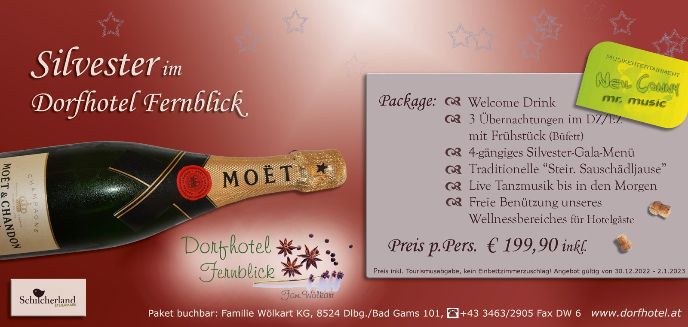
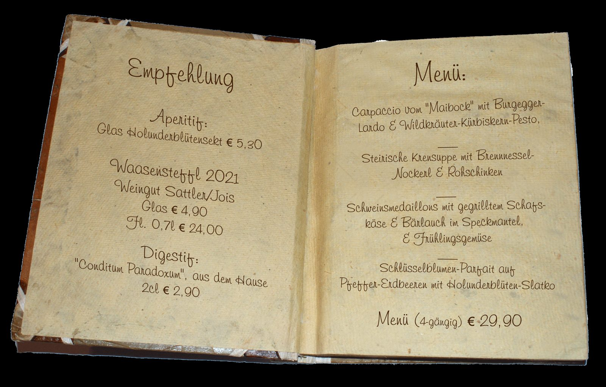
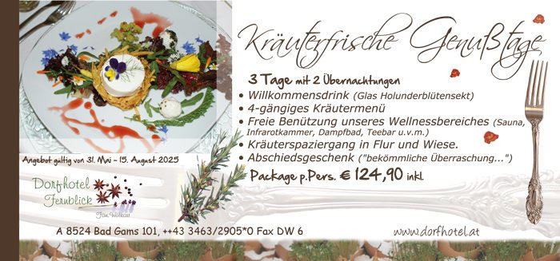

30 Zimmer mit Balkon
Bad oder Dusche, WC, Balkon, Telefon und TV. Laut Hotelprospekt zusätzlich Sat-TV und Minibar. Kinder bis 6 Jahre nächtigen im Zimmer der Eltern frei.
ab € 99,–Doppelzimmer m. Frühstück
Ein familiär geführtes Landhotel in ruhiger Lage — 30 Zimmer mit Balkon, ein Wellnessbereich zum Abschalten, ein 300 m² großer Schau-Kräutergarten und eine Küche, die nach Kürbis, Kernöl und frischen Kräutern schmeckt.

Urlaubsoase im Grünen — ein Ort der Entschleunigung.
Gefunden
Vergessen Sie den Alltag und lassen Sie die Seele baumeln. Das Dorfhotel Fernblick liegt umgeben von Mischwäldern, sanften Hügeln, Obstgärten, saftigen Weinbergen und blühenden Wiesen — eine Urlaubsoase im Grünen und ein Ort der Entschleunigung.
Logieren können Sie in einem unserer 30 modern ausgestatteten Zimmer. Dass Bad, Dusche und WC heute selbstverständlich sind, versteht sich — bei uns aber auch, dass alle Zimmer mit Balkon, Telefon und TV dem Komfortanspruch vollends Rechnung tragen.
Geführt wird das Haus von der Familie Wölkart, die Obst, Gemüse und Kräuter zu einem guten Teil selbst zieht. Ein Gütesiegel braucht es dafür nicht — für Frische und Qualität bürgt der grüne Daumen der Familie.
Bad oder Dusche, WC, Balkon, Telefon und TV. Laut Hotelprospekt zusätzlich Sat-TV und Minibar. Kinder bis 6 Jahre nächtigen im Zimmer der Eltern frei.
ab € 99,–Doppelzimmer m. Frühstück
Täglich zwei 4-gängige Menüs, gerne beliebig kombiniert oder als Einzelgerichte. Für Veganer gibt es tägliche Alternativen, dazu jahreszeitliche Schwerpunkte.
ab € 12,50Halbpension-Aufpreis p. P.
Gesundheit, Vitalität und regenerative Erholung: Sauna, römisches Dampfbad, Infrarotkammer und Teebar — in den Packages frei nutzbar.
inklusivein unseren Arrangements
Küchenkräuter, Heilpflanzen, Giftpflanzen und exotische Schönheiten. Kommentierte Führungen für Gruppen nach Voranmeldung.
€ 20,–Führung pro Gruppe
Der Zauber der Baumblüte: Die Landschaft schmückt sich mit tausenden und abertausenden weißer und rosa Blüten. Dazu der „Steirische Osterbrauch“ von 3. bis 8. April 2026.
Am schönsten ist der Kräutergarten in den Monaten Mai, Juni und Juli, wenn die meisten Kräuter- und Duftpflanzen in voller Blüte stehen. Kraut des Monats Juli: Lavendel.
Der Weinherbst ist die wohl schönste Urlaubszeit im Schilcherland: Sturm mit gebratenen Kastanien zu zünftigen steirischen Gstanzln im goldenen Licht über den Hügeln.
Drei Nächte, ein 4-gängiges Silvester-Gala-Menü, die traditionelle „Steirische Sauschädljause“ und Live-Tanzmusik bis in den Morgen — ein guter Zeitpunkt, sich früh ein Top-Angebot zu sichern.
€ 199,90 pro Person, kein Einbettzimmerzuschlag

Klicken Sie ein Bild an, um es groß zu sehen.




Oder direkt am Telefon: +43 3463 2905-0, täglich erreichbar.